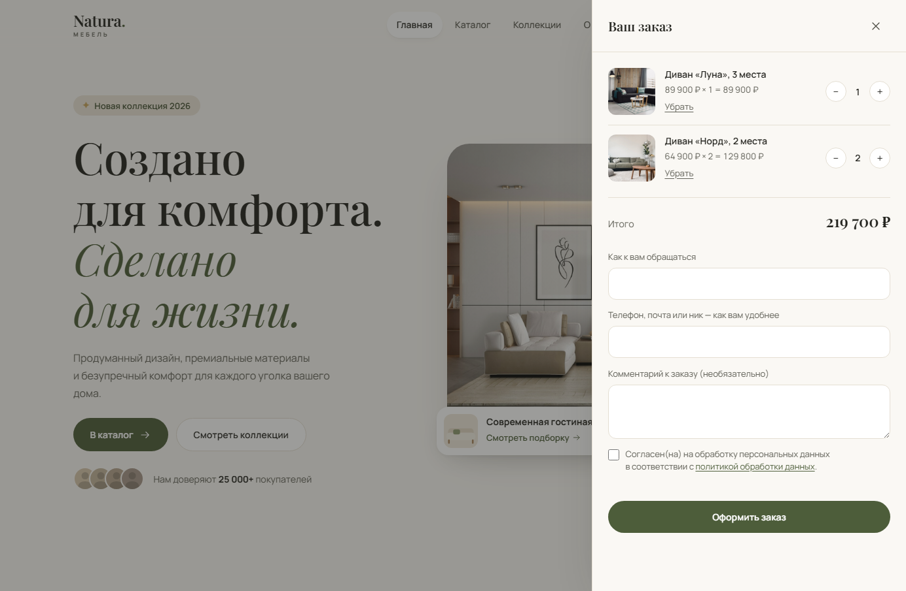

Кейс · интернет-магазин
Natura — лендинг, который принимает заказы
Красивая страница показывает товар. Магазин — продаёт его. Разница в том, что происходит после нажатия «в корзину»: каталог из базы, заказ на сервере, уведомление владельцу и админка, где заказ видно.
- 13товаров в каталоге, 8 категорий со счётчиками
- 0зависимостей на фронтенде — ни сборки, ни фреймворка
- 3рубежа защиты формы заказа от ботов и чужих сайтов
- 219 700 ₽сумма проверочного заказа сошлась до рубля
Задача
У мебельной мастерской была вёрстка: красивый первый экран, карточки товаров, прайс. Заказать было нельзя — товары лежали прямо в разметке, а «купить» никуда не вело. Чтобы добавить позицию или поменять цену, нужно было править HTML.
Задача звучала как «прикрутить корзину», но настоящая была другая: сделать так, чтобы владелец мог управлять каталогом без разработчика, а заказ доходил до него быстрее, чем покупатель успеет передумать.
Что сделано
Каталог переехал в базу
Товары, категории, цены, скидки и наличие теперь в PostgreSQL. Фильтры по категориям считают количество сами, «нет в наличии» выключает кнопку заказа, зачёркнутая старая цена появляется, только если скидка реально есть.

Корзина и оформление
Корзина живёт в браузере покупателя, поэтому не теряется при перезагрузке и не требует регистрации. Но цену при оформлении сервер берёт из базы по идентификатору товара, а не из того, что прислал браузер. Иначе достаточно было бы открыть инструменты разработчика и купить диван за рубль.

Заказ уходит в Telegram
Заказ сохраняется в базу и параллельно отправляется владельцу в Telegram. Порядок именно такой: если мессенджер недоступен, заказ всё равно сохранён, и его видно в админке. Наоборот было бы хуже — уведомление пришло, а заказа нигде нет.
Защита формы
Форма заказа открыта миру, поэтому её проверяют тремя рубежами. Все три проверены на живом сервере:
- Ловушка для ботов — поле, спрятанное в разметке. Человек его не видит, автозаполнитель заполняет. Заполнено — заказ молча отбрасывается;
- Отсечка по времени — форма, отправленная быстрее пары секунд после открытия, заполнена не руками;
- Проверка источника — запрос с чужого сайта или совсем без указания источника отклоняется на сервере.
Первые два случая отвечают «принято» и тихо выбрасывают заказ. Это не небрежность: бот, получивший отказ, подбирает обход, а бот, получивший «спасибо», уходит довольным.
Почему сайт остаётся живым, когда сервер лежит
Всё, что зависит от сервера, вынесено в отдельный файл и отделено от кода, который оформляет страницу. Если бэкенд недоступен, ломается только каталог — на его месте появляется телефон магазина, а остальная страница работает как обычно.
То же самое с фотографиями: файл сначала загружается, и только после успеха подставляется фоном. Нет файла — остаётся аккуратная иллюстрация, а не битая картинка.
Что вскрылось по дороге
База не подключалась: соединение устанавливалось, а на первый же пакет протокола сервер молча отключался. Диагностика вручную на четырёх адресах показала, что дело не в базе и не в её регионе — у провайдера закрыт порт 5432, стандартный порт PostgreSQL.
Решилось сменой транспорта: драйвер несёт тот же протокол внутри WebSocket поверх 443 — порта, который открыт везде. Логика запросов не изменилась ни на строку.
Стек
Фронтенд без единой зависимости: ни сборки, ни фреймворка — страница открывается быстро и живёт на любом хостинге. Бэкенд отдельным сервисом, его можно заменить или отключить, не трогая сайт.
Работа учебная, не по заказу клиента: магазин вымышленный, фотографии со стока. Код, каталог и оформление заказа — настоящие и работают.
Нужен сайт, который принимает заказы?
Если у вас уже есть страница, её обычно можно достроить, а не переделывать: добавить каталог, корзину и уведомления к тому, что есть. Напишите, что нужно — скажу, сколько это займёт и будет стоить. Разбор задачи бесплатный.